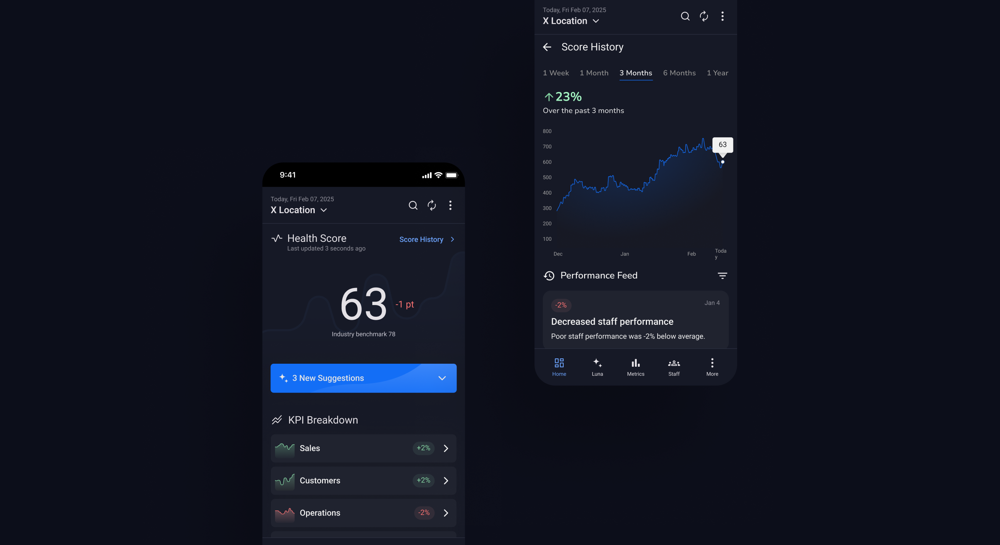
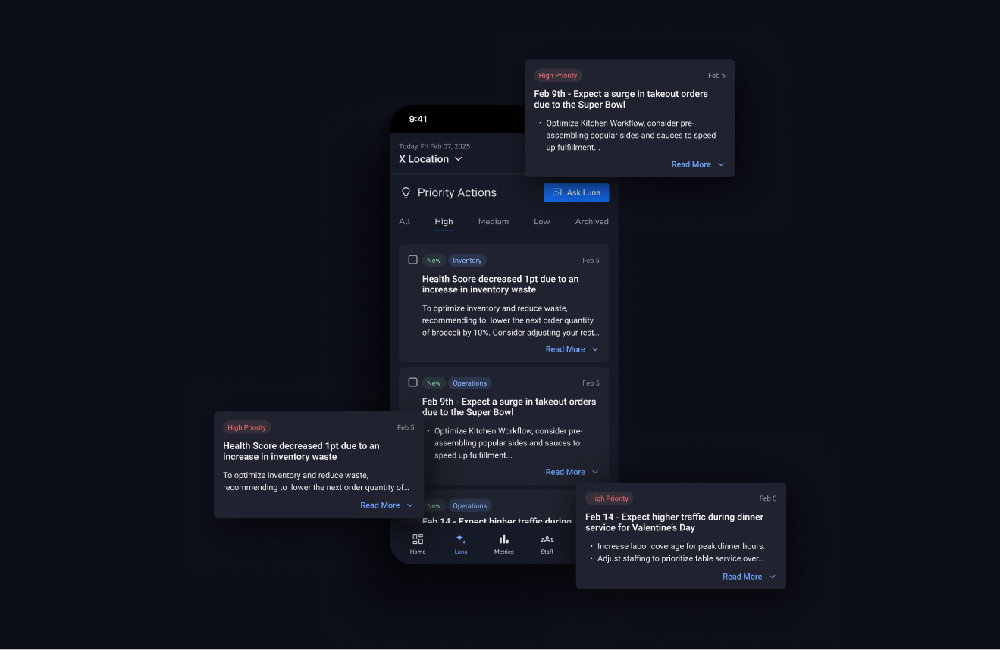
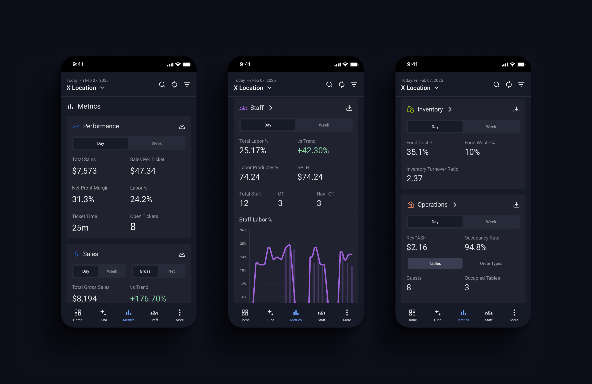
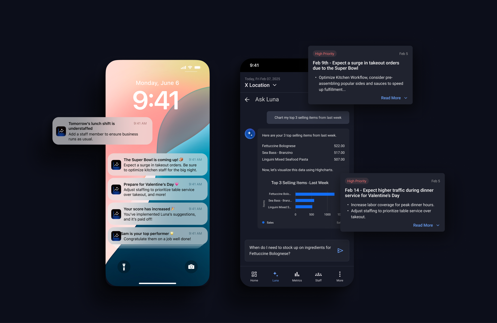
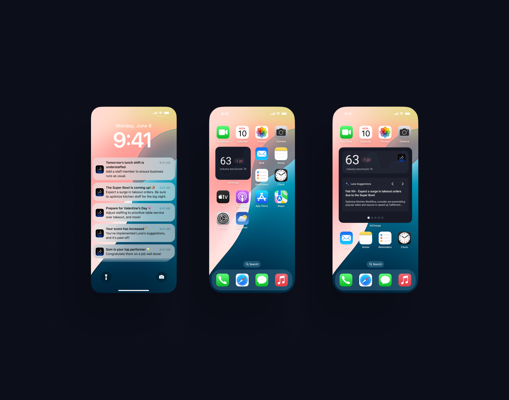
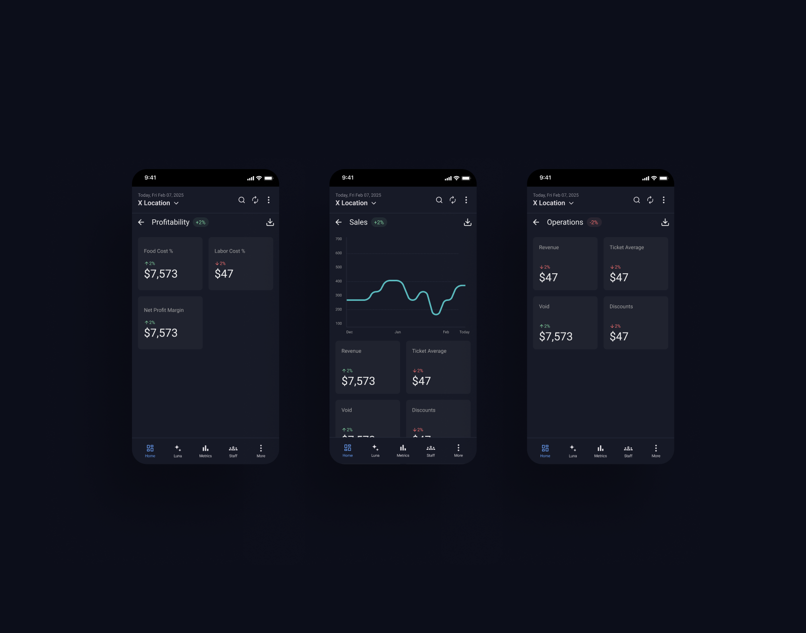
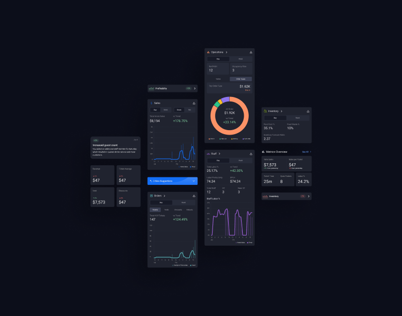

// Restaurant Health App
Project Description
This project’s goal was to redesign the app around an intelligence feature, the Restaurant Health Score, that is integrated into Shift4’s InCharge mobile app, transforming it from a purely analytics dashboard into a source of actionable, perspective insights for restaurant operators.

Problem
InCharge gave restaurant operators plenty of data — sales, labor, tickets, discounts — but it was purely descriptive. Managers still had to interpret dozens of individual reports themselves to understand how their business was actually doing, with no single source of truth and no guidance on what to do next. Shift4 needed a way to turn InCharge from a dashboard operators checked out of obligation into a tool they’d actually rely on and talk about.

Research + Validation
We ran a competitor analysis across two categories: restaurant management tools (ToastNow, 7Shifts, PeciTaste, SmartQuote, BevSpot) to see how the category approached KPIs and automation, and consumer apps like Strava that had already solved the problem of compressing complex performance data into a single, trusted score.
We paired that with direct client interviews — including Lone Star and Bar Burrito — and surveys to pressure-test the concept with real operators. This research shaped three things: which metrics actually mattered enough to weight into a health score, distinct user personas (Quick Service vs. Full Service, single-location vs. enterprise), and how operators wanted to set and track goals for their business.

Approach
At the core of the redesign is the Health Score itself: a weighted aggregate of KPIs pulled from Shift4’s POS, business management platform, and InCharge APIs. Rather than a fixed formula, we designed it as a starting algorithm that could be refined over time with expert and operator input — giving Shift4 room to improve accuracy without needing a full model, and giving operators the sense that the score reflects their business, not a generic average.
We built the rest of the app around that score:
- Home surfaces the score at a glance against an industry benchmark, with a KPI breakdown and metrics snapshot underneath.
- Luna, an AI assistant, turns the score into action — a priority actions feed that flags what’s worth attention (an upcoming demand spike, a dip in loyalty engagement) instead of leaving operators to dig for it.
- Metrics gives operators a place to go deeper, organized by Sales, Staff, Orders, Inventory, Operations, and Customers, each with its own KPIs and trends.

Proposed Roadmap
We delivered this as a phased roadmap, not a single release: starting with an MVP centred on the score and basic goal-setting, expanding into deeper POS integration with food waste tracking, payroll, and industry benchmarking, and eventually reaching predictive analytics and conversational, AI-driven recommendations through Luna.
Outcome
The result was a fully redesigned InCharge experience — moving the app from a passive analytics tool to a source of proactive, prescriptive insight. The broader goal was to give InCharge a genuine unique selling proposition: a feature distinctive enough to drive engagement and word-of-mouth adoption on its own, positioning the redesign as a foundation Shift4 could build toward over multiple phases rather than a one-time feature launch.



Shift4
This project was completed as part of my employment at Shift4. I would like to acknowledge the expertise and collaborative support of Sara Shafiyan, the senior designer on this project, as well as Michael Dougall, the developer that worked out the back-end logistics. Our collective effort secured second place in this design sprint.